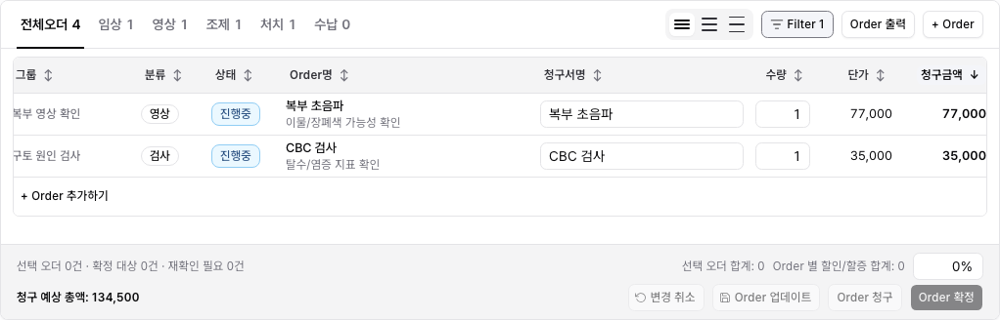

Chart / Order Table Sort / Filter Behavior
이번 작업은 수납 pilot에서 확정한 정렬/필터 정책을 차트의 처방/오더 테이블에 제한 적용한 것이다. 오더 draft와 확정 workflow를 건드리지 않도록, 화면에서 의미가 안정적인 컬럼만 정렬하고 필터는 섹션의 Filter 버튼으로 분리했다.
무엇이 바뀌었나
- 오더 테이블 헤더에서 단일 컬럼 정렬을 실제 row 순서에 적용한다.
- 정렬은 없음 → 오름차순 → 내림차순 → 없음 순서로 바뀐다.
- 정렬 대상은 그룹, 분류, 상태, Order명, 청구서명, 수량, 단가, 청구금액, 수의사로 제한했다.
- 필터는 테이블 헤더가 아니라 오더 섹션 오른쪽의 Filter 버튼에서 연다.
- 기존 분류 탭은 유지하고, 추가 필터는 상태와 수의사 조건만 제공한다.
- 필터 조건이 있으면 버튼이
Filter N으로 조건 수를 보여준다. - Save view, saved filters, 바깥 Clear 버튼, active chip row, multi-sort는 넣지 않았다.
보존한 것
- Order 청구서명/수량 draft 편집과 수량 validation을 유지했다.
- Order 업데이트, Order 청구, Order 확정, 삭제 확인 흐름을 유지했다.
- 선택 오더 합계와 청구 예상 총액은 기존 draft row와 선택 ID 기준으로 유지된다.
- mock auth/session, local-first route-backed behavior, chart workflow는 유지했다.
- Supabase, DB/RLS, 서버 정렬/필터, URL/localStorage persistence는 이번 범위에서 제외했다.
Evidence
Mock auth storage state로 실제 차트 화면을 열고, 로그인 화면이 아닌 오더 테이블을 캡처했다.

변경 파일
| 파일 | 내용 |
|---|---|
src/features/chart/module.tsx |
차트 오더 테이블의 단일 정렬, 섹션 Filter 버튼, 상태/수의사 필터 builder, 필터 empty state copy를 추가했다. |
tests/chart.spec.ts |
오더 테이블 정렬과 필터 builder 동작을 검증하는 focused Playwright test를 추가했다. |
docs/design/system/table-sort-filter-behavior.md |
DEN-272 chart/order adoption 결과와 제한 범위를 기록했다. |
docs/work/design-system/DESIGN-SYSTEM-PR-028-chart-order-table-sort-filter-behavior.md |
DEN-272 repo work item을 추가했다. |
검증 결과
- Passed
npm run lint - Passed
npx tsc --noEmit -
Passed
PLAYWRIGHT_BASE_URL=http://127.0.0.1:3103 npx playwright test tests/chart.spec.ts -g "chart order table supports single sort and section filter builder" -
Passed
PLAYWRIGHT_BASE_URL=http://127.0.0.1:3105 npx playwright test tests/chart.spec.ts - Passed Browser QA evidence capture with mock auth.
- Passed
npm run docs:check
다음 단계
DEN-272는 Human Review로 넘길 수 있다. 다음 구현은 customer management table에 같은 정책을 제한 적용하는 DEN-273이 자연스럽다.